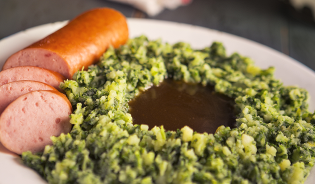

Boerenkool of boerenkoolstamppot is een stamppotgerecht gemaakt van boerenkool. Het gerecht wordt in Nederland,
grote delen van Noord-Duitsland en delen van Scandinavië gegeten. Van boerenkool wordt vaak gezegd
dat de smaak pas echt goed is als er op het veld "een nacht vorst overheen is gegaan",
omdat de kou ervoor zorgt dat de plant extra suikers aanmaakt. De oogst begint dan ook
vaak pas na de eerste nachtvorst, de kool kan indien gewenst de hele winter op het veld blijven staan.
Men kan het boerenkoolblad zelf snijden, maar dit is tijdrovend. Veel boerenkool wordt
daarom voorgesneden in plastic zakken van 300 of 500 gram verkocht. Voor de tradionele
Gelderse bereiding wordt echter gestroopte boerenkool gebruikt. Deze wordt voorgekookt
>en na een nacht uitlekken gesneden en gehakt, en voor een tweede keer samen met de aardappels gekookt.
Boerenkoolstamppot wordt traditioneel gegeten met een kuiltje jus, worst
(braadworst, draadjesvlees of rookworst), mosterd en gebakken spekjes. 'Zure' toevoegingen als
zilveruitjes, Amsterdamse uitjes, augurk, rolmops, Piccalilly en/of azijn worden ook gebruikt.
Schil de aardappelen en snijd in stukjes. Kook de aardappelen samen met de boerenkool in 20 min. gaar.
Verwarm de rookworst volgens de verpakking. Snipper de ui. Laat in een steelpan de boter lichtbruin worden en fruit de ui. Voeg de jus en het water toe
en laat al roerend met garde aan de kook komen. Roer de mosterd erdoor.
Verwarm de melk. Stamp vervolgens de aardappelen met de groenten en melk door elkaar.
Breng op smaak met peper en eventueel zout. Serveer de stamppot met de worst en jus.
